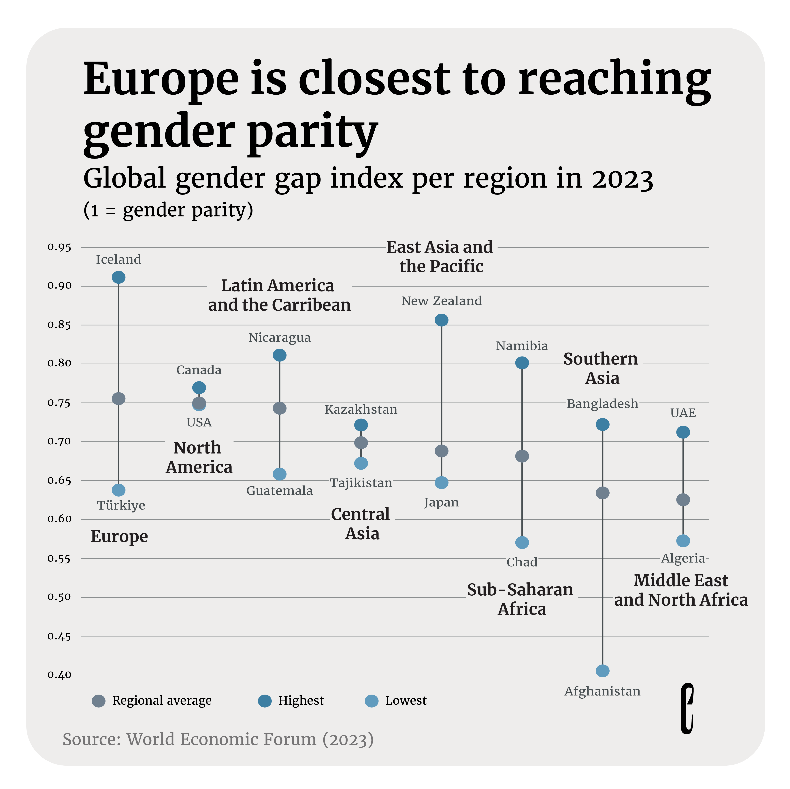
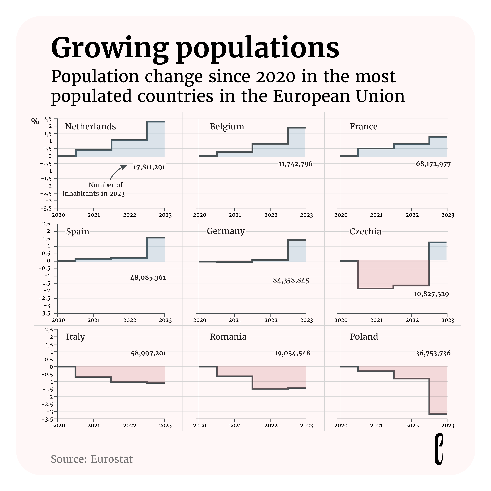
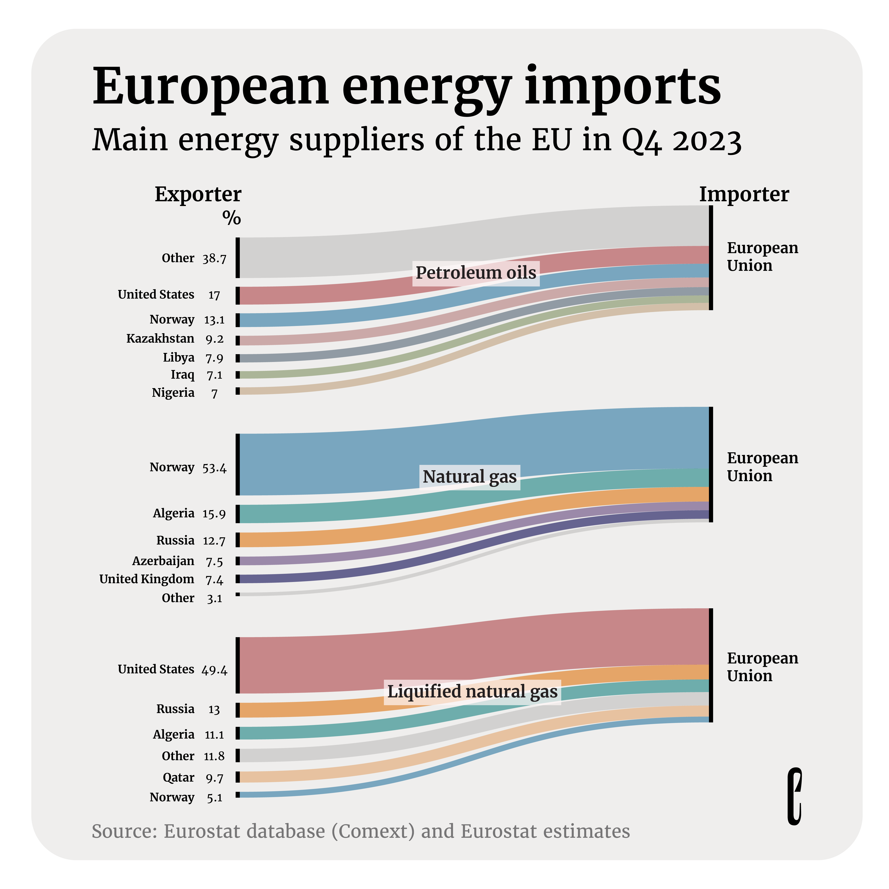
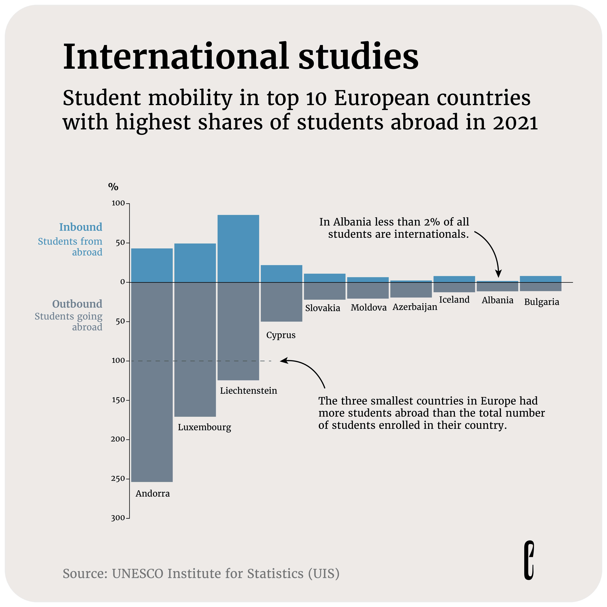

The European Correspondent, March 2024

March 8, 2024
Closing the gender gap
International Women’s Day calls for an assessment of gender equality around the world. The 2023 results for the global gender gap index, which assesses gender parity in economic participation and opportunity, education, health and survival, and political empowerment, reveal that no country has yet attained parity. However, Europe is closest to reaching that goal, with Iceland in the lead.
Data source: World Economic Forum

March 14, 2024
When it rains it pours
Summer 2023 was marked by a series of extreme weather events across Europe, including heat waves and storms. Rainfall levels were particularly high in northern Europe in July and August, with a storm affecting several countries, including Slovenia, Norway, and Sweden. Other parts of Europe also experienced torrential rains and flooding, such as Croatia, Germany, and Austria.
Data source: National Centers for Environmental Information

March 24, 2024
Europe's population growth
The European population is experiencing overall growth, driven by various factors unique to each country but united by the challenge of aging demographics. Although population growth stagnated in 2020 and 2021 due to the COVID-19 pandemic's impact, many countries have witnessed an increase since 2022. This resurgence is partly due to increased immigration rates, particularly driven by Ukrainian refugees seeking resettlement in European nations like Germany and Czechia.
Data source: Eurostat

March 27, 2024
Foreign Fuel
Energy imports into the European Union have reduced in both value and volume. This is in part heightened by the EU reduction plan that set a 15% reduction goal in gas consumption from August 2022. However, the EU still relies on many countries for its energy. While petroleum oils originate from different countries, more than half of natural gas imports come from Norway, while the United States is the prime importer of liquified natural gas (LNG).
Data source: Eurostat
